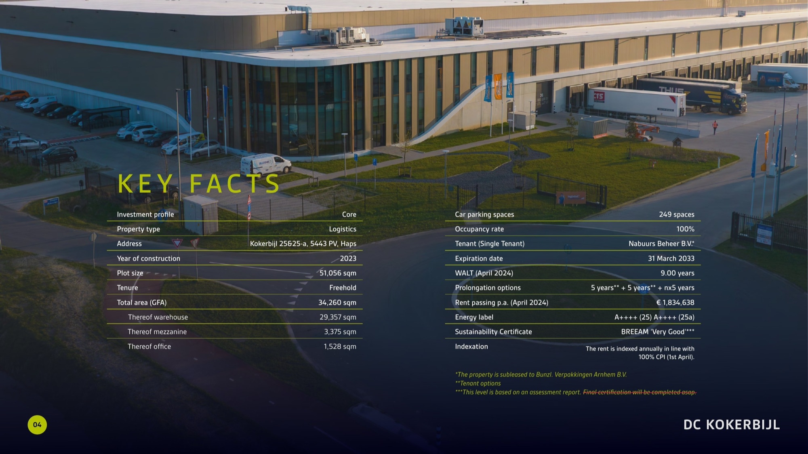
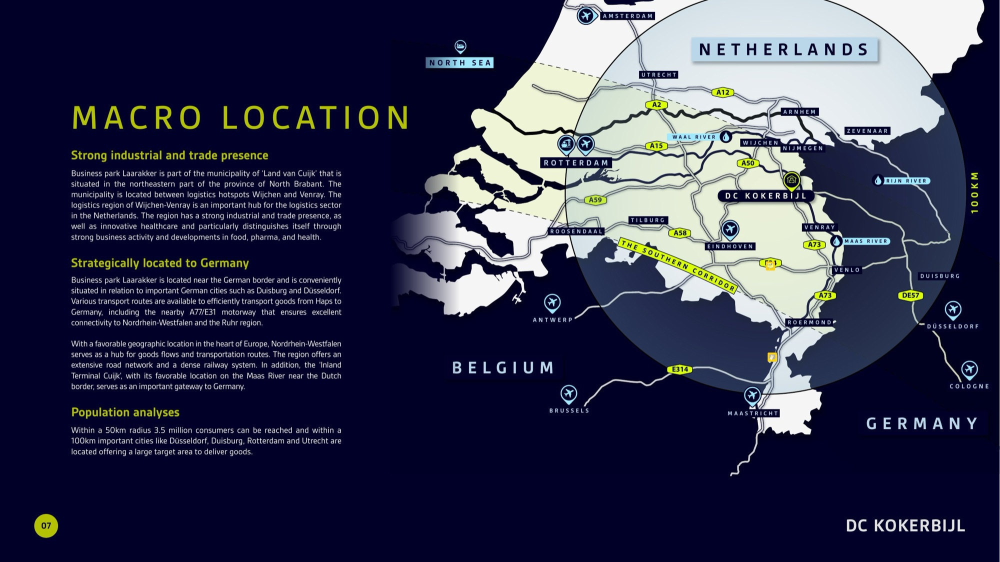
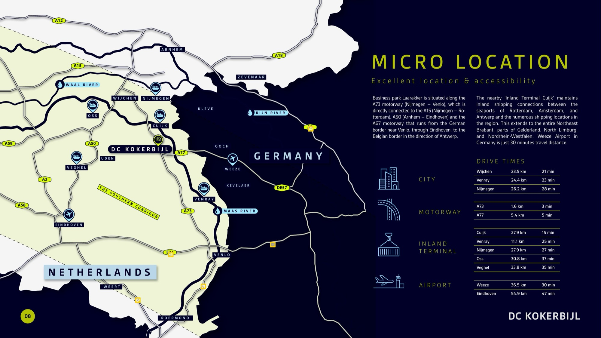
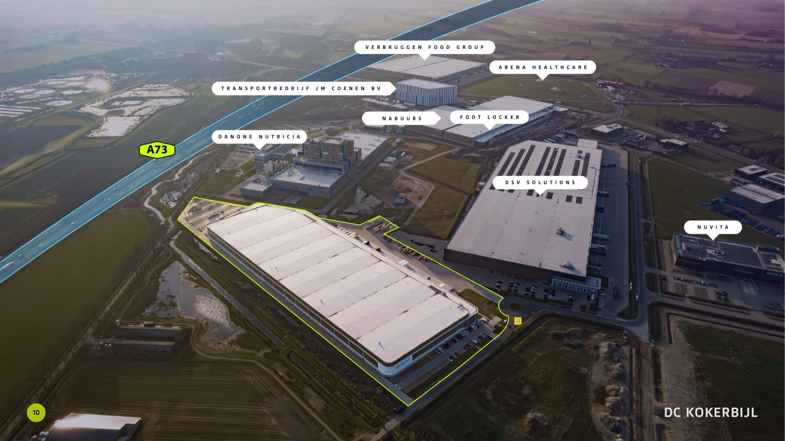
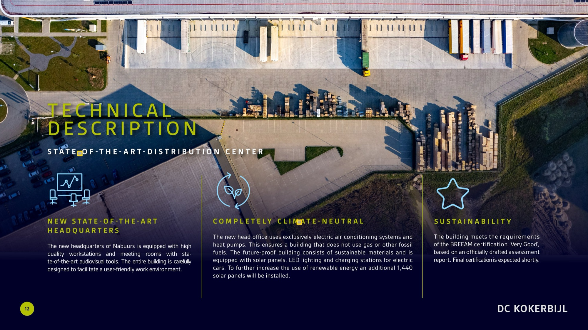
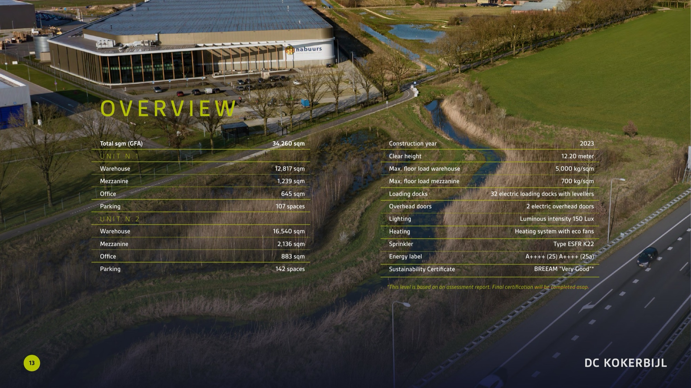

JLL is een van 's werelds grootste vastgoedadviseurs. Hun investment-memos worden voorgelegd aan internationale investeerders met strakke aandachtspannes — de eerste 30 seconden bepalen of een deal verder komt. Deze brochure moest dus tegelijk brand-conform, scan-baar en visueel sterk zijn.
We ontwierpen het volledige document voor DC Kokerbijl — een prime logistics opportunity met Nabuurs als hoofdgebruiker. 21 spreads: cover, key facts, location, macro- en micro-cartografie, technische specs, tenancy details, financials en contact. Eigen drone-fotografie + custom cartografie + info-design — alles in JLL-huisstijl. Drukklaar en als PDF voor digitale distributie.
Key Facts spread. Investment-data leesbaar maken in 30 seconden. Tweekoloms-tabel met fund-specs en tenant-info, gelaagd op de drone-luchtfoto met de signature gele JLL-accent.

Cartografie als verkooptool. Twee custom-getekende kaarten van de Nederlands–Duitse logistics-corridor: een macro-overzicht (Amsterdam, Rotterdam, Düsseldorf met luchthavens en motorways) en een micro-zoom op DC Kokerbijl met drive-times naar omliggende steden, motorways, inland terminal en airports. Alles op maat geïllustreerd — geen Google-Maps-screenshots.


Site context + technical description. De DC Kokerbijl in zijn buurman-context: gelabelde drone-shot met aangrenzende blue-chip tenants (Danone, Foot Locker, DSV Solutions). Daarna een full-bleed aerial met info-design over sustainability — BREEAM Very Good, climate-neutral HQ, 1.440 zonnepanelen.


Overview spread. Detail-specs (warehouse, mezzanine, office, parking) gelaagd op een drone-shot. Twee units, identieke layout — leesbaar zonder horror-vacui.

Wat we leverden
Productie: sircle.agency · Investment Memo design in opdracht van JLL · Project: DC Kokerbijl (Nabuurs HQ), Haps NL